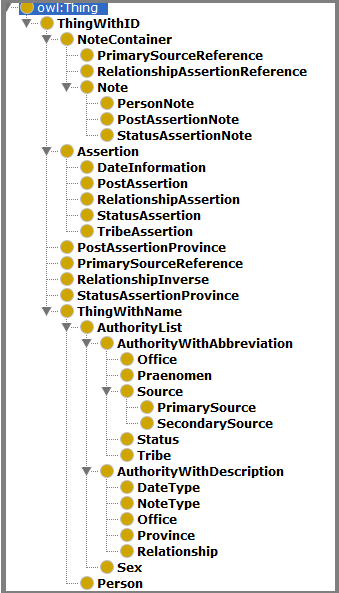

A basic OWL ontology has been developed which describes the data structure of the DPRR rdf repository. Its URI is:
http://romanrepublic.ac.uk/rdf/ontology#
In this part of the DPRR rdf documentation we present an overall semantic conception of DPRR’s ontology.
As mentioned elsewhere, although DPRR follows a few of the principles of the factoid prosopography model, it is not a factoid prosopography, and so it is important to understand that DPRR’s ontology is not based on the factoid prosopography ontology (FPO) described at http://factoid-dighum.kcl.ac.uk/.
This documentation for the ontology is divided into three parts.
DPRR's RDF data is a representation of the structured data model upon which DPRR's database was created, and which is described briefly in DPRR's technical pages. Thus, to understand DPRR's ontology, it is useful to first understand the simplified data structure diagram that is shown there:

Here one can see that the overarching structure for DPRR, and hence for its ontology, involves a collection of a few kinds of assertions about historical people, as is drawn from various secondary (modern) prosopographical sources. You can see this overarching structure, extended by a more detailed structure, incorporated into the ontology, and thus shown both the ontology's class hierarchy and class relationship diagrams presented below.
The figure below presents the DPRR Ontologies SubClass hierarchy as shown in the ontology editing software Protégé. Several things to note here:
You will have noted that not all the classes in the hierarchical class figure are listed above, and indeed none of the hierarchical “leaf” classes are mentioned. The ones that are in this figure express a hierarchical clustering that brings classes with certain common semantic characteristics together. The other classes, not described above, are derived directly from DPRR’s database tables. Their semantics are given in the detailed formal description of the ontology generated by OWLDoc and found here.
The following figure presents all the
Classes in DPRR’s ontology and shows how they relate to each other through owl:ObjectProperties.
When studying this figure, you should first note that it is meant to be a
broad overview of the classes, and leaves out many
details. For example, no owl:DataProperties are shown in the diagram, and the
SubClassing hierarchy is not fully shown either. Nonetheless, a broad overview
is helpful if you are trying to grasp the structure overall.
First, about the legend. As it tells you:
The class relationship diagram just provided shows the classes in
the DPRR ontology as coloured boxes with two types of arrows connecting them.
In this section, we will focus on the significance of the black, named, arrows,
which present Class connections expressed by the owl:ObjectProperty mechanism.
The reader may have noted the “:” before class names in this diagram. This
implies the base URI prefix for DPRR’s ontology that applies to all the items
in the diagram: http://romanrepublic.ac.uk/rdf/ontology#
In the ontology itself, this URI is given the prefix “vocab:”, although in the following discussion the vocab: prefix is left out purely for the sake of compactness.
Persons
DPRR is a prosopographical project, so an important class is :Person, shown at the left side of the diagram. DPRR Persons have a rich set of owl:DataProperties, listed in the section about :Person in the OWLDoc pages in http://romanrepublic.ac.uk/rdf/ontology/doc. However, one can see in this diagram that :Person also connects to several other data classes. One is :Sex, connected through the :Person property :isSex. By being coloured brown, we can see that :Sex is an Authority List. This bit of the diagram, then, is telling us that triples such as the following exist in the repository:
<http://romanrepublic.ac.uk/rdf/entity/Person/1>
:isSex <http://romanrepublic.ac.uk/rdf/entity/Sex/Male>
Where http://romanrepublic.ac.uk/rdf/entity/Person/1 is a URI for a particular person in DPRR, and http://romanrepublic.ac.uk/rdf/entity/Sex/Male is a particular Sex.
As with :isSex and :Sex, we can also see connections between :Person and the :Praenomen entity. Roman naming conventions gave most males, and many females, a “Praenomen”, which is one of a relatively short list of standard first names. The set of Praenomena used in DPRR is provided by the :Praenomen Authority list, and we can see from the diagram that a Person will, in most cases, have one specified by means of the :hasPraenomen property, and perhaps an alternative one via the :hasAltPraenomen property.
DPRR has also attached notes, often from secondary sources, about its persons. You can see the link from :Person to :PersonNote through the property :hasPersonNote. As it turns out, any single person can have more than one :PersonNote linked through multiple use of the :hasPersonNote property. The possibility of multiple occurrences of a property does not apply for all properties attached to this or any other Class in DPRR, for example this possibility of multiple references does not apply to the :isSex property in DPRR. Furthermore, the fact that multiple occurrences of :hasPersonNote might occur, but only one :isSex property is allowed is not shown in this figure.
Assertions
Most of the data for DPRR is made up of assertions about persons. As the relationship figure shows, there are several kinds of assertions, all subclasses of the general :Assertion class. Assertion classes are shown in red boxes in the figure. From :Assertion we can see that a relationship is connected to :Person it is about through the :isAboutPerson attribute. Since this owl:objectProperty is defined for the :Assertion class, we can infer that all its subclasses, e.g. :DateInformation, :RelationshipAssertion, etc, also have this property, and can also use it to connect an assertion to the relevant person to which it applies.
In DPRR most assertions come from a secondary source. Thus, one can see (perhaps with difficulty) an owl:ObjectProperty called :hasSecondarySource that connects :Assertion to its :SecondarySource. See more about links between assertions and sources in the section on Sources below.
Most types of Assertions in DPRR connect a Person to a particular kind of associated Authority List. :PostAssertion, for instance, connects persons to offices, and you can see the property :hasOffice connecting :PostAssertion to :Office. This kind of structure also applies to :StatusAssertion and :TribeAssertion. :RelationshipAssertion, by its very nature connects two people to a kind of relationship, not just one, and you can see in the diagram that :RelationshipAssertion has not only the :isAboutPerson property (that it inherits from its parent class :Assertion), but also the :hasRelatedPerson property. If then, person A is son of person B, A is the primary person connected from the :RelationshipAssertion through the :isAboutPerson property, and B is the secondary person connected through the :hasRelatedPerson property. Many relationships have an implied inverse relationship (if A is son of B, B is father of A), and information about these inverses, as understood by DPRR, can be found in class :RelationshipInverse.
Two kinds of Assertions, :StatusAssertion and :PostAssertion can have notes attached to them. :StatusAssertion can have a :StatusAssertionNote connected through the :hasStatusAssertionNote property. As it turns out DPRR attached very few notes to Status Assertions. However, the :hasPostAssertionNote link between a :PostAssertion and a :PostAssertionNote happens quite frequently since the main secondary source for information about posts, Broughton, provides many notes.
:StatusAssertion and :PostAssertion also have date ranges that apply to them. They thus are both subclasses of :AssertionWithDateRange, which contains text and numeric properties that allow it to specify a date range.
:DateInformation is shown as a subclass of :Assertion, as indeed it is, but it
operates somewhat differently from the other Assertions in that its primary
function is not to connect persons to authority lists. Instead, it has owl:DataProperties
that allow life dates about a person to be asserted. You can see details about
it in the detailed description of the class provided through OWLDoc here.
There is a link to :DateType authority list, and it is used to allow
DPRR to specify the kind of life date that this particular one is.
There is are relationships provided between status and post assertions to what Romans called a “Province” — often, but not necessarily, a geographical location to which the post or status term applied. :Province is the set of Provinces referenced by DPRR. The :StatusAssertionProvince class connects :StatusAssertion to :Province, as the way to make the assertion, and similarly, the :PostAssertionProvince class connects :PostAssertion to a province in :Province.
All assertions are backed up from secondary sources. The link from :Assertion is provided by :hasSecondarySource.
Authority Lists
As the Class hierarchy diagram shows, DPRR authority lists are grouped broadly into two types, those with abbreviations, and those with associated descriptive text (and one that has neither: :Sex). (:Office belongs to both groups). Two authority lists, :Office and :Province, are internal hierarchical organisations, which is expressed through their :hasParent property.
Sources
In the Class Relationships figure you can see that both Primary and Secondary sources (:PrimarySource and :SecondarySource) are subclassed from :AuthorityWithAbbreviation. In addition to primary name and abbreviation, however, both :Source types have provision to support further bibiliographic data about the sources. You can look up the details in the OWLDoc materials.
DPRR has been built with the purpose of bringing together primarily 20th and 21st century prosopographical scholarship about the Roman Republic. For this reason, pretty well all the assertions made in DPRR come from one secondary source or another, and hence there is a link from :Assertion to :SecondarySource through the Assertion’s property :hasSecondarySource.
Although some structure has been put in place to for primary historical sources, and in some cases the reference to the primary source as provided by the secondary source has been harvested, DRPP’s research team found that there was insufficient time to resolve these references to actual Primary Source objects in :PrimarySource. Thus, this structure, although in place, should not at this time be expected to be useful for queries against DPRR data, since it is essentially not populated with data.